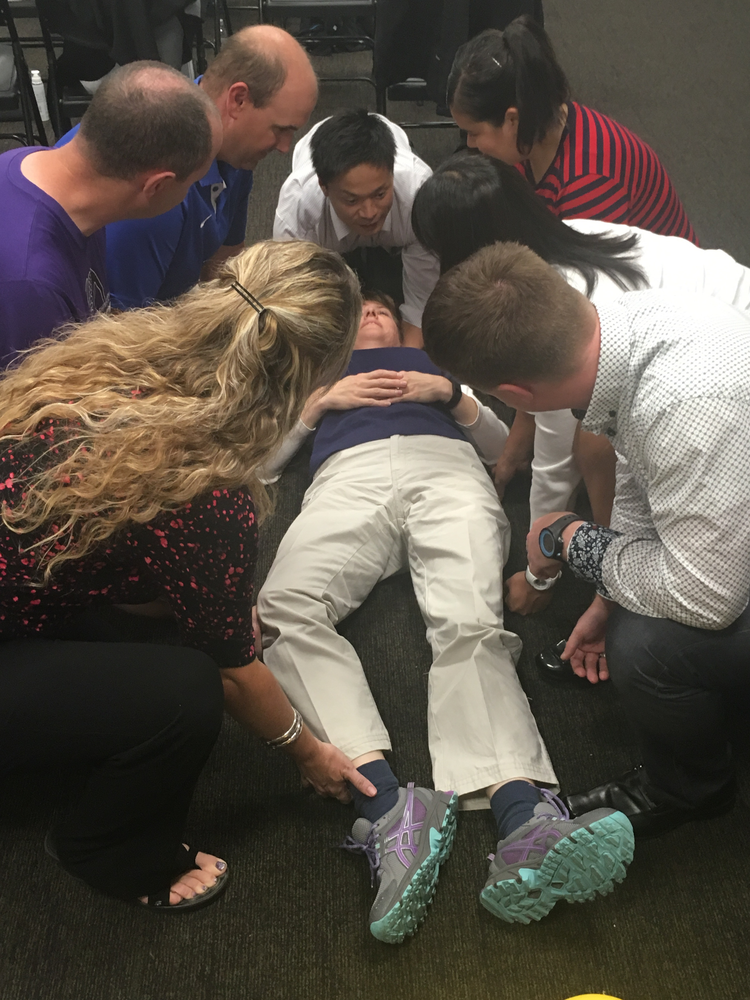

News from OATS
Portland, OR.-- The OATS Summer Symposium was held July 9, 2016 at the University of Portland. Turnout was strong with over 50 attendees including a number of AT students from around the state. Attendees earned four Category A and one EPB CEUs and had the opportunity to interact and socialize with fellow OATS members.
The day started with a talk on emergency preparedness for sports-related emergencies by Sam Johnson, PhD, ATC from Oregon State University. The EBP approved talk reviewed findings from a recent study on Oregon high schools’ preparedness for emergencies and discussed potential barriers and facilitators to adoption of best practice recommendations.
The morning ended with a presentation by Dana Bates, PhD, ATC from George Fox University and Greg Hill, MS, ATC from Linfield College on planning for sports-related catastrophic events. The talk centered on how proactively planning the response is critical to prevent issues when these crises arise.
After lunch Emily Kosderka, MS, ATC, from Concordia University and Ryan Rockwood, ATC from OHSU presented on early intervention post-concussion. Not only was current literature reviewed some of the innovative interventions that athletic trainers at OHSU are using was discussed
Kendra Dahl, ATC and Angie Bond, ATC led a review of new recommendations for spinal motion restriction and equipment removal. The session included an interactive lab portion that allowed ATs the opportunity to practice the techniques.
The day concluded with an open-forum between OATS members and the OATS Executive Board. Current issues and initiatives were discussed including specific language in the state practice act.
Thanks to all the program organizers, presenters, and sponsors Brian Apling, MEd, ATC, LAT from Henry Schein and Courtney White, MS, ATC from Cramer for lunch and breakfast.